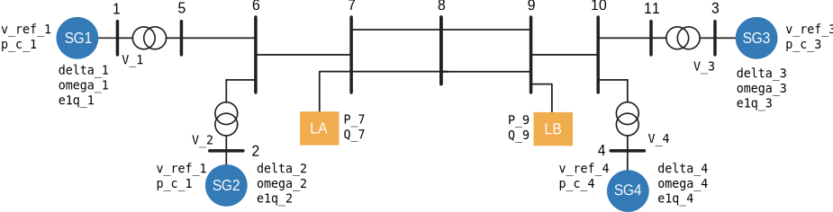
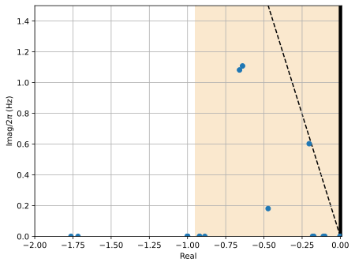
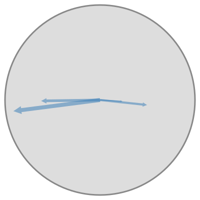

Kundur example 12.6#
from pydae.bmapu import bmapu_builder
grid = bmapu_builder.bmapu('k12p6_pss.json')
grid.checker()
grid.uz_jacs = True
grid.verbose = False
grid.build('k12p6')
import numpy as np
import matplotlib.pyplot as plt
import pydae.ssa as ssa
from IPython.core.display import HTML,SVG
from pydae.svg_tools import svg
%config InlineBackend.figure_formats = ['svg']
SVG('sp_k12p6.svg')

import k12p6
Initialization#
model = k12p6.model()
# Cases:
# (ii) Thyristor exciter with a high transient gain (K_stab=0, T_b=1)
# (iii)Thyristor exciter with a transient gain reduction (TGR) (K_stab=0, T_b=10)
# (iv) Thyristor exciter with high transient gain and PSS (K_stab=20, T_b=1)
K_a = 50.0
D = 0.1
T_b = 1.0 # AVR lag time constant: (ii) T_b=1, (iii) T_b=10, (iv) T_b = 1
K_stab = 20 # PSS main gain: (ii) K_stab=0, (iii) K_stab=0, (iv) K_stab=20
lf = 1.0
params = {'P_7':-967e6*lf,'P_9':-1_767e6*lf,'Q_7':100e6*lf,'Q_9':250e6*lf,
'K_a_1':K_a,'K_a_2':K_a,'K_a_3':K_a,'K_a_4':K_a,
'K_stab_1':K_stab,'K_stab_2':K_stab,'K_stab_3':K_stab,'K_stab_4':K_stab,
'T_b_1':T_b,'T_b_2':T_b,'T_b_3':T_b,'T_b_4':T_b,
'p_c_1':lf*700/900,'p_c_2':lf*700/900,'p_c_4':lf*700/900,
'D_1':D,'D_2':D,'D_3':D,'D_4':D}
model.ini(params,'xy_0.json')
#model.report_y()
repo = ''
for it in range(1,5):
p = model.get_value(f'p_g_{it}')*model.get_value(f'S_n_{it}')
q = model.get_value(f'q_g_{it}')*model.get_value(f'S_n_{it}')
print(f"G{it}: P = {p/1e6:0.1f} Q = {q/1e6:0.1f} ")
G1: P = 698.7 Q = 142.2
G2: P = 698.6 Q = 255.4
G3: P = 720.3 Q = 133.5
G4: P = 698.6 Q = 221.6
Small signal analysis#
Eigenvalues#
ssa.A_eval(model)
damp = ssa.damp_report(model)
damp.sort_values('Damp').round(3)
| Real | Imag | Freq. | Damp | Participation | |
|---|---|---|---|---|---|
| Mode 22 | -0.204 | -3.786 | 0.603 | 0.054 | [delta_1, omega_1, e1q_1, e1d_1, v_r_1, x_ab_1... |
| Mode 21 | -0.204 | 3.786 | 0.603 | 0.054 | [delta_1, omega_1, e1q_1, e1d_1, v_r_1, x_ab_1... |
| Mode 18 | -0.640 | -6.963 | 1.108 | 0.092 | [delta_3, omega_3, e1q_3, delta_4, omega_4] |
| Mode 17 | -0.640 | 6.963 | 1.108 | 0.092 | [delta_3, omega_3, e1q_3, delta_4, omega_4] |
| Mode 20 | -0.660 | -6.798 | 1.082 | 0.097 | [delta_1, omega_1, delta_2, omega_2] |
| Mode 19 | -0.660 | 6.798 | 1.082 | 0.097 | [delta_1, omega_1, delta_2, omega_2] |
| Mode 29 | -0.472 | 1.138 | 0.181 | 0.383 | [delta_1, omega_1, e1q_1, e1d_1, v_r_1, x_ab_1... |
| Mode 30 | -0.472 | -1.138 | 0.181 | 0.383 | [delta_1, omega_1, e1q_1, e1d_1, v_r_1, x_ab_1... |
| Mode 28 | -4.453 | -0.932 | 0.148 | 0.979 | [delta_1, omega_1, e1q_1, e1d_1, v_r_1, x_ab_1... |
| Mode 27 | -4.453 | 0.932 | 0.148 | 0.979 | [delta_1, omega_1, e1q_1, e1d_1, v_r_1, x_ab_1... |
| Mode 31 | -1.763 | 0.000 | 0.000 | 1.000 | [e1q_1, e1q_2] |
| Mode 32 | -1.717 | 0.000 | 0.000 | 1.000 | [e1q_3, e1q_4] |
| Mode 33 | -0.887 | 0.000 | 0.000 | 1.000 | [x_gov_1_1, x_gov_1_3, x_gov_1_4] |
| Mode 34 | -0.921 | 0.000 | 0.000 | 1.000 | [x_gov_1_1, x_gov_1_2] |
| Mode 1 | -1.000 | 0.000 | 0.000 | 1.000 | [x_ab_1] |
| Mode 37 | -0.182 | 0.000 | 0.000 | 1.000 | [x_34_pss_1, x_34_pss_2, x_34_pss_3, x_34_pss_4] |
| Mode 38 | -0.173 | 0.000 | 0.000 | 1.000 | [x_34_pss_2] |
| Mode 39 | -0.177 | 0.000 | 0.000 | 1.000 | [x_34_pss_1] |
| Mode 40 | -0.178 | 0.000 | 0.000 | 1.000 | [x_34_pss_2, x_34_pss_3, x_34_pss_4] |
| Mode 41 | -0.102 | 0.000 | 0.000 | 1.000 | [x_wo_pss_1, x_wo_pss_2, x_wo_pss_3, x_wo_pss_4] |
| Mode 42 | -0.103 | 0.000 | 0.000 | 1.000 | [x_wo_pss_1] |
| Mode 43 | -0.103 | 0.000 | 0.000 | 1.000 | [x_wo_pss_3, x_wo_pss_4] |
| Mode 44 | -0.111 | 0.000 | 0.000 | 1.000 | [x_wo_pss_2, x_wo_pss_4] |
| Mode 45 | -0.000 | 0.000 | 0.000 | 1.000 | [xi_freq] |
| Mode 46 | -0.000 | 0.000 | 0.000 | 1.000 | [xi_v_3, xi_v_4] |
| Mode 47 | -0.000 | 0.000 | 0.000 | 1.000 | [xi_v_1, xi_v_2] |
| Mode 36 | -0.002 | 0.000 | 0.000 | 1.000 | [delta_1, delta_2, delta_3, delta_4] |
| Mode 35 | -0.922 | 0.000 | 0.000 | 1.000 | [x_gov_1_2, x_gov_1_3, x_gov_1_4] |
| Mode 25 | -5.980 | 0.000 | 0.000 | 1.000 | [e1d_1, e1d_2, e1d_4] |
| Mode 48 | -0.000 | 0.000 | 0.000 | 1.000 | [xi_v_3, xi_v_4] |
| Mode 2 | -1.000 | 0.000 | 0.000 | 1.000 | [x_gov_2_1] |
| Mode 3 | -1.000 | 0.000 | 0.000 | 1.000 | [x_ab_2] |
| Mode 4 | -1.000 | 0.000 | 0.000 | 1.000 | [x_gov_2_2] |
| Mode 5 | -1.000 | 0.000 | 0.000 | 1.000 | [x_ab_3] |
| Mode 6 | -1.000 | 0.000 | 0.000 | 1.000 | [x_gov_2_3] |
| Mode 7 | -1.000 | 0.000 | 0.000 | 1.000 | [x_ab_4] |
| Mode 8 | -1.000 | 0.000 | 0.000 | 1.000 | [x_gov_2_4] |
| Mode 9 | -90.771 | 0.000 | 0.000 | 1.000 | [v_r_4] |
| Mode 10 | -95.174 | 0.000 | 0.000 | 1.000 | [v_r_1, v_r_2] |
| Mode 11 | -97.710 | 0.000 | 0.000 | 1.000 | [v_r_1, v_r_2] |
| Mode 12 | -97.763 | 0.000 | 0.000 | 1.000 | [v_r_3, v_r_4] |
| Mode 13 | -50.024 | 0.000 | 0.000 | 1.000 | [x_12_pss_4] |
| Mode 14 | -49.878 | 0.000 | 0.000 | 1.000 | [x_12_pss_1, x_12_pss_2] |
| Mode 15 | -49.753 | 0.000 | 0.000 | 1.000 | [x_12_pss_1, x_12_pss_2] |
| Mode 16 | -49.740 | 0.000 | 0.000 | 1.000 | [x_12_pss_3] |
| Mode 23 | -6.774 | 0.000 | 0.000 | 1.000 | [e1d_3, e1q_4] |
| Mode 24 | -6.383 | 0.000 | 0.000 | 1.000 | [e1d_3] |
| Mode 26 | -5.655 | 0.000 | 0.000 | 1.000 | [e1d_4] |
| Mode 49 | -0.000 | 0.000 | 0.000 | 1.000 | [xi_v_1, xi_v_2, xi_v_4] |
ssa.plot_eig(model.eigvalues,x_min=-2,x_max=0.01,y_min=0,y_max=1.5);

Participation factors#
ssa.participation(model)['Mode 22'].abs().round(2).sort_values(ascending=False)
omega_1 0.16
omega_3 0.13
delta_1 0.12
omega_4 0.12
omega_2 0.11
delta_3 0.11
delta_4 0.10
delta_2 0.08
e1q_1 0.04
e1q_2 0.03
x_gov_1_1 0.02
e1d_3 0.01
x_gov_1_2 0.01
e1q_3 0.01
e1q_4 0.01
e1d_4 0.01
x_gov_1_4 0.01
x_gov_1_3 0.01
x_ab_4 0.00
v_r_4 0.00
xi_v_3 0.00
xi_v_4 0.00
x_gov_2_4 0.00
x_wo_pss_4 0.00
x_34_pss_3 0.00
x_12_pss_3 0.00
x_wo_pss_3 0.00
x_12_pss_4 0.00
x_34_pss_4 0.00
x_gov_2_3 0.00
xi_v_1 0.00
x_ab_3 0.00
v_r_3 0.00
x_gov_2_1 0.00
x_wo_pss_1 0.00
x_12_pss_1 0.00
x_34_pss_1 0.00
x_ab_1 0.00
e1d_2 0.00
v_r_2 0.00
x_ab_2 0.00
xi_v_2 0.00
x_gov_2_2 0.00
x_wo_pss_2 0.00
x_12_pss_2 0.00
x_34_pss_2 0.00
v_r_1 0.00
e1d_1 0.00
xi_freq 0.00
Name: Mode 22, dtype: float64
Mode shapes#
ssa.shape2df(model).loc['Mode 22'][[f'omega_{it+1}' for it in range(4)]]
omega_1 0.16∠-97.3
omega_2 0.11∠-90.9
omega_3 0.04∠ 93.3
omega_4 0.09∠ 96.1
Name: Mode 22, dtype: object
svg_string = ssa.plot_shapes(model,mode='Mode 22',states=[f'omega_{it+1}' for it in range(4)])
SVG(svg_string)

Time domain simulation#
model = k12p6.model()
model.ini(params,'xy_0.json')
model.run(1.0,{'v_ref_1': 1.03})
model.run(10.0,{'v_ref_1': 1.03*1.05});
model.post();
fig,axes = plt.subplots()
axes.plot(model.Time,model.get_values('omega_1'),label='omega_1')
axes.plot(model.Time,model.get_values('omega_2'),label='omega_2')
axes.plot(model.Time,model.get_values('omega_3'),label='omega_3')
axes.plot(model.Time,model.get_values('omega_4'),label='omega_4')
axes.legend()
<matplotlib.legend.Legend at 0x2006b1c9910>
fig,axes = plt.subplots()
axes.plot(model.Time,model.get_values('v_pss_1'),label='v_pss_1')
axes.plot(model.Time,model.get_values('v_pss_2'),label='v_pss_2')
axes.plot(model.Time,model.get_values('v_pss_3'),label='v_pss_3')
axes.plot(model.Time,model.get_values('v_pss_4'),label='v_pss_4')
axes.legend()
<matplotlib.legend.Legend at 0x2006b3e89d0>